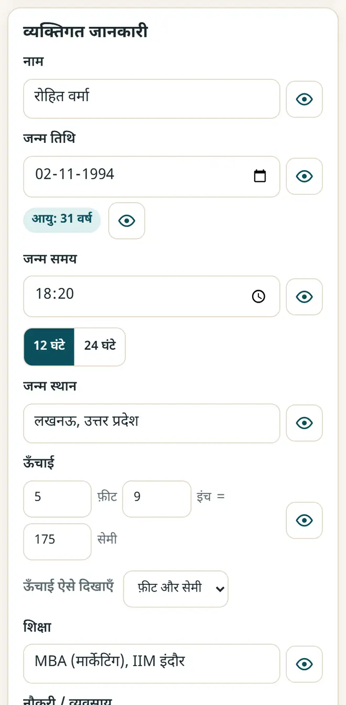
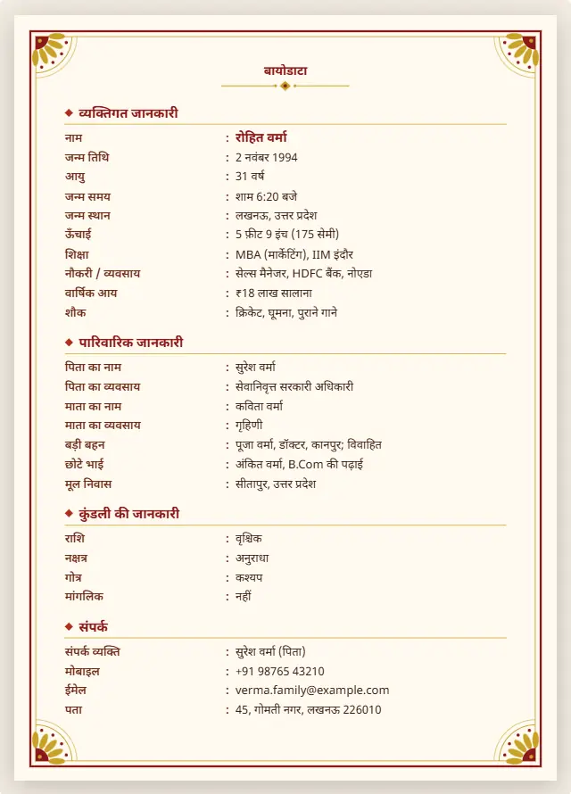

शादी का बायोडाटा फॉर्मेट: क्या लिखें और मुफ़्त में कैसे बनाएँ
अच्छा बायोडाटा एक पेज में आ जाता है, पढ़ने में आसान होता है और सिर्फ़ उतना ही बताता है जितना परिवार बताना चाहे। यहाँ जानकारी का आम क्रम है, और एक मुफ़्त मेकर जो हिंदी, मराठी, अंग्रेज़ी और 9 और भाषाओं में चलता है।
छोटा जवाब
शादी के बायोडाटा में आमतौर पर व्यक्तिगत जानकारी (नाम, जन्म की तारीख़ और जगह, लंबाई, पढ़ाई, नौकरी), परिवार की जानकारी (माता-पिता, भाई-बहन, मूल निवास), चाहें तो कुंडली की जानकारी (राशि, नक्षत्र, गोत्र) और संपर्क होता है। इन्हें शादी का बायोडाटा मेकर में भरें, डिज़ाइन चुनें और PDF या WhatsApp इमेज के रूप में सेव करें।
5 स्टेप में बायोडाटा बनाएँ
-
मेकर खोलें और उदाहरण देखें
शादी का बायोडाटा मेकर खोलें। पहले एक उदाहरण बायोडाटा दिखता है। अपनी जानकारी से शुरू करने के लिए “खाली से शुरू करें” दबाएँ।
-
जानकारी भरें
व्यक्तिगत, पारिवारिक और संपर्क की जानकारी टाइप करें। उम्र जन्म की तारीख़ से अपने-आप निकलती है, ख़ाली लाइनें छूट जाती हैं, और आँख वाला बटन किसी लाइन को मिटाए बिना छिपा देता है।

जानकारी भरें: टाइप करते ही बायोडाटा बदलता है। -
फ़ोटो और कुंडली जोड़ें (ज़रूरी नहीं)
फ़ोटो जोड़ें और उसे क्रॉप करें। कुंडली वाला हिस्सा तभी चालू करें जब आपका परिवार कुंडली देखता हो।
-
डिज़ाइन और भाषा चुनें
8 डिज़ाइन में से एक चुनें, जैसे पारंपरिक, फूलों वाला, रॉयल या गेंदा, और सबसे ऊपर का चिह्न। लेबल हिंदी, मराठी या 12 में से किसी भी भाषा में हो सकते हैं, चाहें तो नीचे अंग्रेज़ी के साथ।

एक पेज का तैयार बायोडाटा, प्रिंट करने या भेजने के लिए। -
PDF या WhatsApp इमेज के रूप में सेव करें
एक पेज की A4 PDF के लिए “प्रिंट / PDF सेव करें” दबाकर Save as PDF चुनें, या सीधे WhatsApp पर भेजने के लिए “WhatsApp फ़ोटो (PNG)” दबाएँ।
शादी के बायोडाटा में आम क्रम
- व्यक्तिगत: पूरा नाम, जन्म की तारीख़, समय और जगह, लंबाई, पढ़ाई, नौकरी और आय।
- परिवार: पिता और माता के नाम और काम, भाई-बहन, मूल निवास और परिवार का प्रकार।
- कुंडली (ज़रूरी नहीं): राशि, नक्षत्र, गोत्र और मांगलिक।
- संपर्क: संपर्क करने वाले व्यक्ति का नाम, फ़ोन नंबर और ईमेल। पूरा बायोडाटा सिर्फ़ भरोसेमंद परिवारों को भेजें।
नए मुफ़्त टूल और हिंदी में AI के पाठ पाएँ
हमारी ईमेल लिस्ट से जुड़ें: नए मुफ़्त ऐप, नई गाइड और AI पर हिंदी वीडियो पाठ की जानकारी आपको मिलती रहेगी। कोई स्पैम नहीं।
सिर्फ़ वयस्कों (18+) के लिए। आप कभी भी नाम हटवा सकते हैं।
हम ये टूल क्यों सुझाते हैं
- सबके लिए मुफ़्त: न विज्ञापन, न साइन-अप, न कोई पेड प्लान।
- प्राइवेट: आपकी फ़ाइलें और जानकारी आपके अपने डिवाइस पर ही रहती हैं।
- फ़ोन, लैपटॉप या स्मार्टबोर्ड पर चलते हैं, और एक बार खुलने के बाद बिना इंटरनेट भी।
- हिंदी समेत 12 भाषाओं में।
वीडियो से सीखना पसंद है? हमारे YouTube चैनल पर AI और मुफ़्त टूल्स के हिंदी पाठ देखें।
अक्सर पूछे जाने वाले सवाल
शादी के बायोडाटा में क्या लिखना चाहिए?
व्यक्तिगत जानकारी, पढ़ाई और नौकरी, परिवार की जानकारी, चाहें तो कुंडली, और संपर्क नंबर। इसे एक पेज में रखें, और जो बात परिवार नहीं बताना चाहता, उसे छोड़ दें।
क्या बायोडाटा हिंदी या मराठी में बना सकते हैं?
हाँ। लेबल की भाषा चुनें: हिंदी, मराठी, गुजराती, बांग्ला, तमिल, तेलुगु और भी। आप जो टाइप करते हैं, वह बिल्कुल वैसा ही रहता है।
बायोडाटा WhatsApp पर कैसे भेजें?
“WhatsApp फ़ोटो (PNG)” दबाकर बायोडाटा की तस्वीर सेव करें, फिर उसे गैलरी से भेजें। PDF भी भेज सकते हैं।
क्या मेरे परिवार की जानकारी सुरक्षित है?
हाँ। जानकारी और फ़ोटो सिर्फ़ आपके डिवाइस के ब्राउज़र में सेव होते हैं। कुछ भी अपलोड नहीं होता। एक कॉपी रखने के लिए बैकअप फ़ाइल बना लें।
क्या बायोडाटा में कुंडली ज़रूरी है?
नहीं। कुंडली वाला हिस्सा अपनी मर्ज़ी का है। अगर आपका परिवार कुंडली नहीं देखता, तो उसे बंद रखें।
काम की लगी?
इसे किसी दोस्त, साथियों या अपने स्कूल के WhatsApp ग्रुप में भेजें।